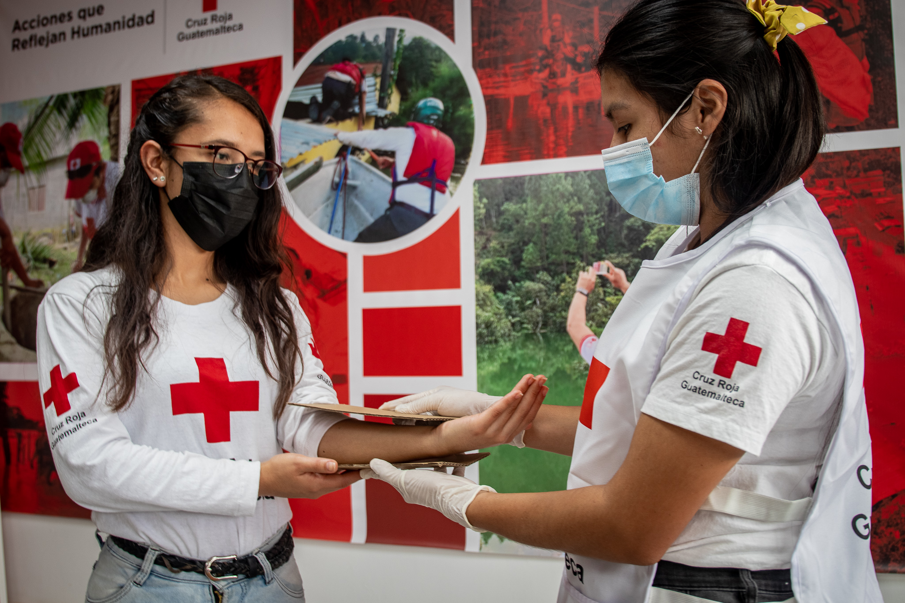
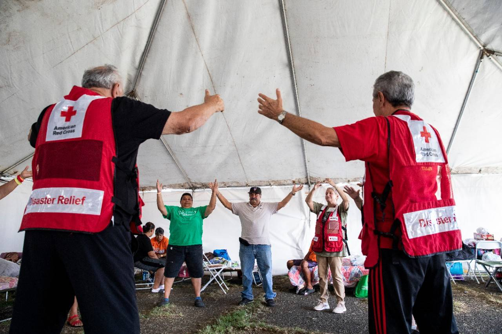
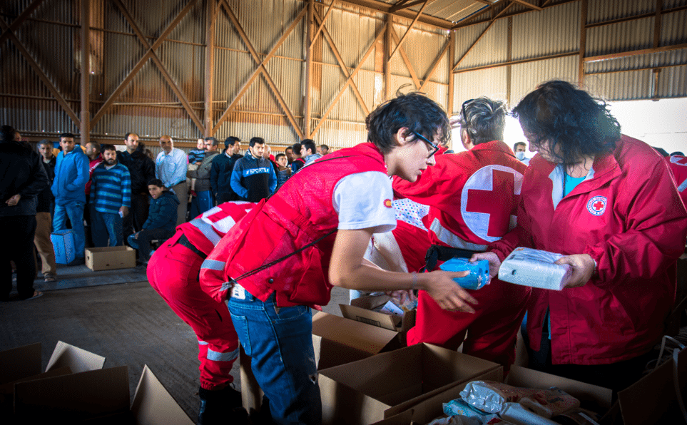

La importancia de la Cruz Roja en situaciones de emergencia

La Cruz Roja es una organización internacional de socorro que proporciona ayuda en situaciones de emergencia, como desastres naturales, conflictos armados y epidemias. Gracias a su red global de voluntarios, ha logrado salvar miles de vidas en todo el mundo.
Además de proporcionar primeros auxilios, la Cruz Roja ofrece servicios de apoyo psicológico, ayuda humanitaria y asistencia a personas desplazadas. Sus equipos de respuesta rápida y su presencia en casi todos los países del mundo son fundamentales para salvar vidas en momentos críticos. A través de campañas de prevención y educación, también ayudan a las comunidades a prepararse para desastres y mejorar su resiliencia.
Cómo los voluntarios marcan la diferencia

Los voluntarios de la Cruz Roja son el corazón de la organización. Sin su dedicación y esfuerzo, muchas de las acciones de socorro no serían posibles. La Cruz Roja capacita a miles de voluntarios cada año para actuar en situaciones de emergencia, proporcionando asistencia en desastres y ofreciendo apoyo a las comunidades vulnerables.
Estos héroes anónimos trabajan en diversas áreas, desde la distribución de alimentos y agua hasta la atención médica en el terreno. Cada voluntario tiene un impacto directo en las vidas de las personas a las que ayudan, demostrando que la solidaridad es la fuerza que impulsa a la Cruz Roja a seguir adelante. A través de programas de formación y desarrollo, los voluntarios también adquieren habilidades valiosas que les permiten servir mejor a sus comunidades y a las personas necesitadas.
Acciones de la Cruz Roja frente a la crisis migratoria

La crisis migratoria mundial es uno de los mayores desafíos humanitarios de la actualidad. La Cruz Roja trabaja incansablemente para proporcionar asistencia a las personas desplazadas por conflictos y situaciones extremas. Desde el apoyo en los campamentos hasta la distribución de suministros esenciales, la Cruz Roja está comprometida con la protección y el bienestar de los migrantes.
Además de la asistencia inmediata, la Cruz Roja también trabaja en la reunificación familiar, ayudando a los migrantes a encontrar a sus seres queridos que han sido separados durante su viaje. Con programas que van desde la salud hasta el apoyo psicosocial, la organización ofrece una red de seguridad para aquellos que más lo necesitan en un momento de vulnerabilidad extrema.